A comprehensive study guide covering external ports, primary hardware, motherboard components, and micro-electronics.
Part 1: External Ports & Connectors
1. Universal Serial Bus (USB) & Thunderbolt
The standard interfaces for modern peripherals, handling data and power.
- USB Type-A & Type-B: Traditional rectangular port (Type-A) and square printer port (Type-B).
- USB Type-C: Reversible oval port supporting high-speed data, video, and fast charging.
- Thunderbolt: Shares the Type-C shape but offers massive data speeds for external GPUs and high-end docks.
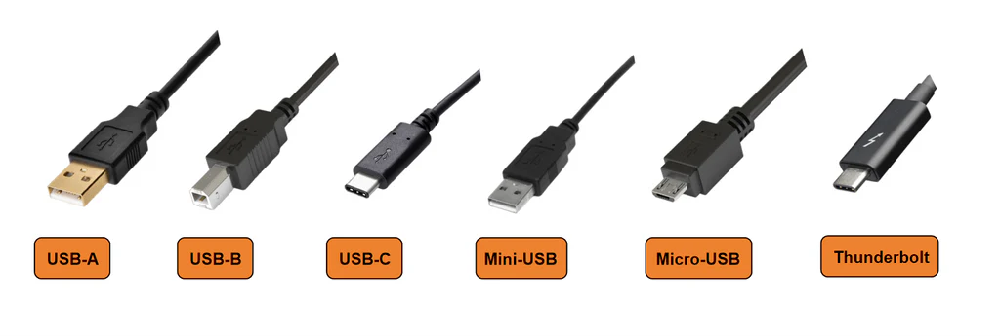
2. Display & Media Ports
Interfaces used to transmit video and audio from the computer to a display monitor or projector.
- HDMI: Standard for consumer electronics (TVs, standard monitors).
- DisplayPort (DP): Preferred for high refresh rate monitors and multi-display setups.
- VGA & DVI (Legacy): Older analog and early digital video standards found on older projectors.
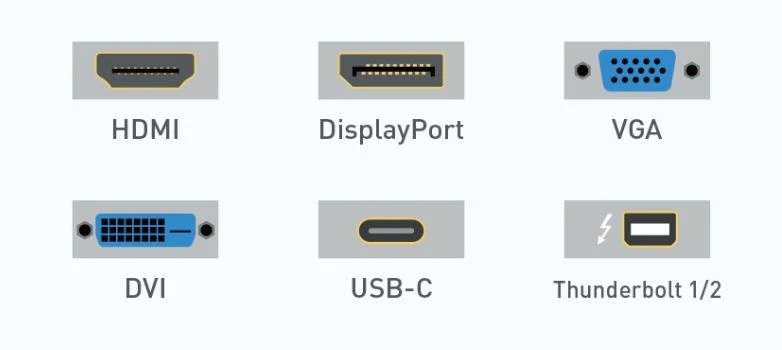
3. Audio & Network Connectivity
- 3.5mm Audio Jacks: Green (Speakers Out), Pink (Mic In), Blue (Line In).
- Optical Audio (TOSLINK): Digital audio using fiber optic light for zero interference.
- Ethernet (RJ-45): Used for wired local area network (LAN) connections for fast, stable internet.
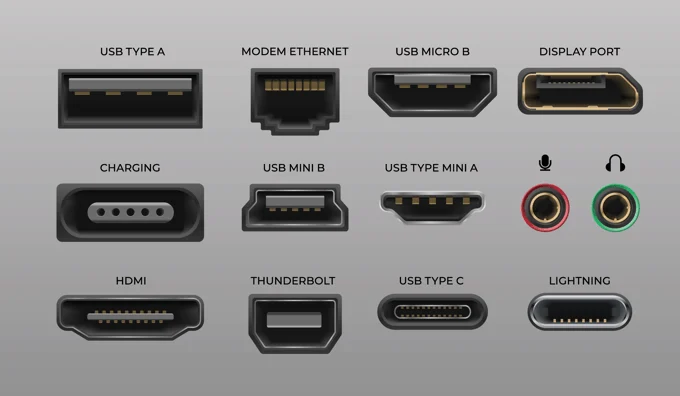
Part 2: Primary System Hardware
1. Power Supply Unit (PSU)
The large metal box usually located at the top or bottom rear of the computer case.
- Function: It converts high-voltage Alternating Current (AC) from the wall outlet into the steady, low-voltage Direct Current (DC) required by the computer components.
- Ratings: Measured in Watts (e.g., 450W, 750W). High-quality PSUs have an "80 PLUS" efficiency rating.
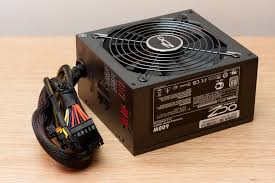
2. Graphics Processing Unit (GPU / Video Card)
A dedicated expansion card responsible for rendering images, video, and 2D/3D graphics to the display.
- Unlike the CPU (which handles general tasks), the GPU excels at doing thousands of mathematical operations simultaneously.
- It plugs into the PCIe x16 slot and has its own dedicated memory called VRAM (Video RAM) and its own cooling fans.
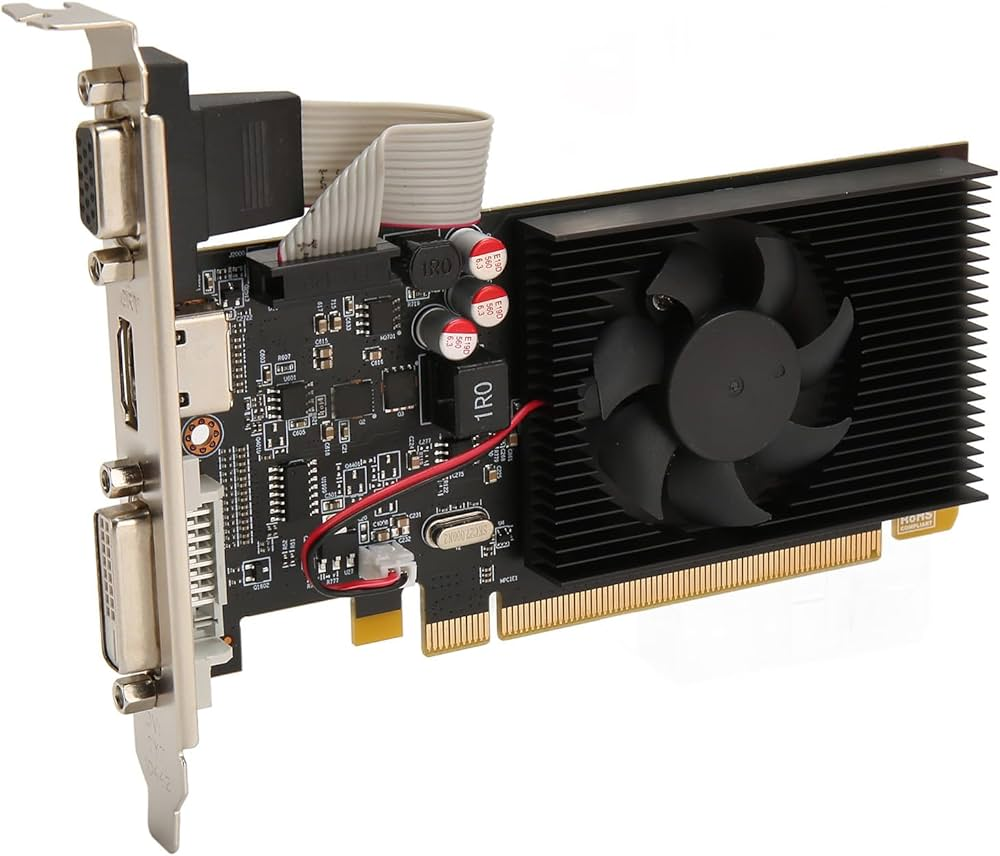
3. Storage Drives (HDD vs. SSD)
The permanent, non-volatile storage where the Operating System, software, and files are kept.
- Hard Disk Drive (HDD): Traditional mechanical drives that use a spinning magnetic platter and a physical read/write arm. They are slower but cheaper for mass storage.
- Solid State Drive (SSD): Modern drives that use flash memory chips (NAND) with no moving parts. They are incredibly fast, durable, and energy-efficient.
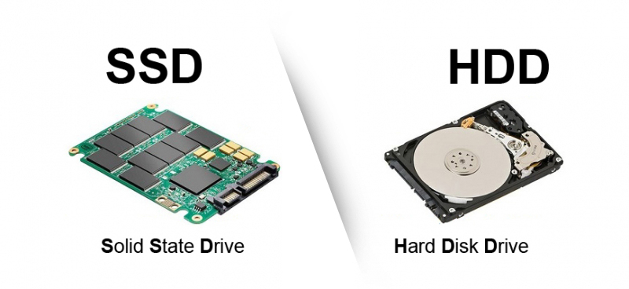
4. System Cooling Solutions
Computer parts generate immense heat and will destroy themselves if not properly cooled.
- Air Cooling: Uses a metal block (Heatsink) to absorb heat, and a Fan to blow the heat away. Requires Thermal Paste between the CPU and the heatsink.
- Liquid Cooling (AIO): Uses a pump to circulate liquid coolant through tubes from a CPU block to a radiator, where fans cool the liquid down.
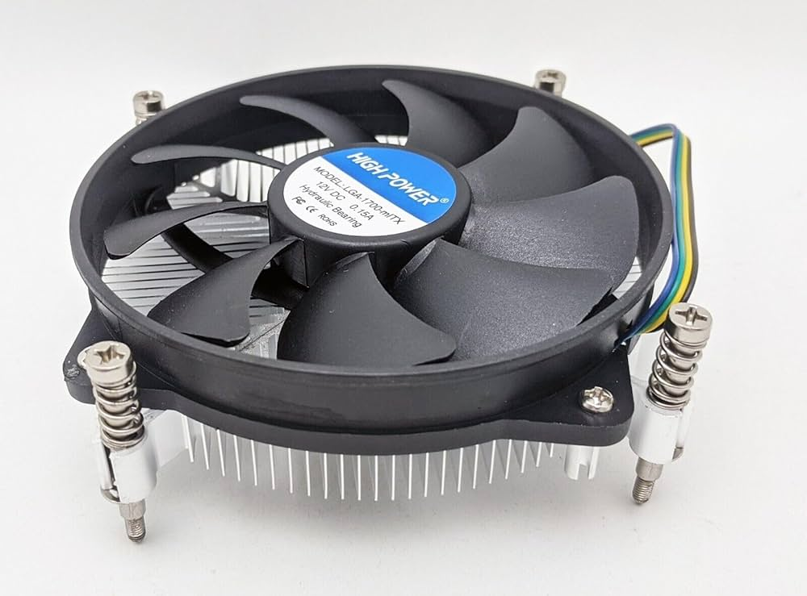
5. Optical & Floppy Drives (Legacy)
Older forms of removable media storage.
- Optical Drives: CD-ROM, DVD-RW, and Blu-Ray drives use lasers to read and write data to spinning polycarbonate discs.
- Floppy Drives: Obsolete drives that read magnetic floppy disks.
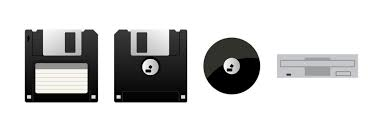
Part 3: Internal Motherboard Anatomy
1. CPU Socket & RAM Slots
- CPU Socket: The large square housing where the central processor sits. Modern sockets contain hundreds of tiny pins.
- RAM Slots (DIMM): Long, narrow slots used to install Random Access Memory (RAM) sticks, the short-term working space for the CPU.
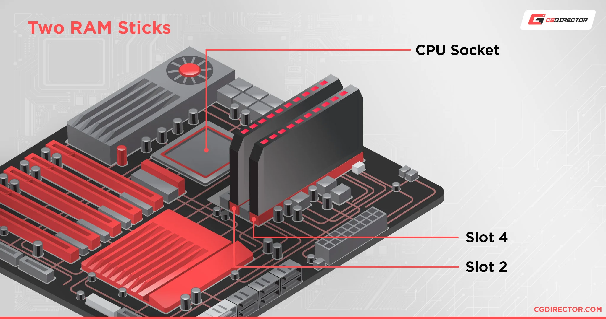
2. The Motherboard Chipset (PCH)
The Chipset (or Platform Controller Hub) is the "traffic controller" of the motherboard.
- It manages the data flow between the CPU, RAM, storage, and external ports.
- Historically split into two chips: the Northbridge (fast connections like RAM and GPU) and Southbridge (slower connections like USB and Audio). Today, they are mostly combined into a single chip.
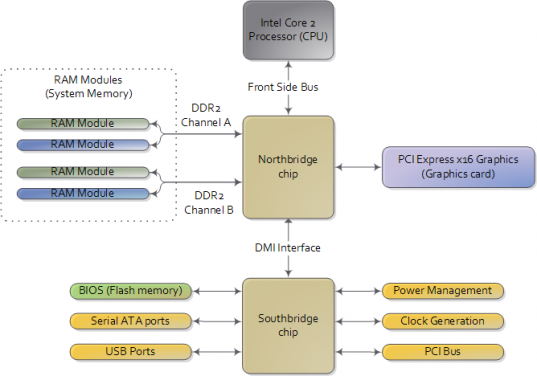
3. Expansion & Storage Interfaces
- PCIe Slots: Used for expansion cards like GPUs, Wi-Fi cards, and Sound cards.
- SATA Ports: Connectors for traditional HDDs and 2.5-inch SSDs.
- M.2 NVMe Slots: Tiny slots for ultra-fast stick-shaped SSDs that screw flat directly onto the motherboard.
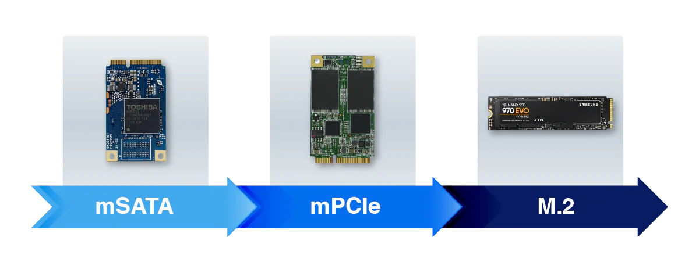
4. Power Connectors, CMOS & BIOS/UEFI
- 24-Pin ATX & 8-Pin EPS: Provide main power to the motherboard and dedicated power to the CPU.
- CMOS Battery: A watch battery that keeps the system clock running when unplugged.
- BIOS/UEFI Chip: A small flash memory chip containing the firmware that initializes the hardware the moment you press the power button, before Windows even starts.
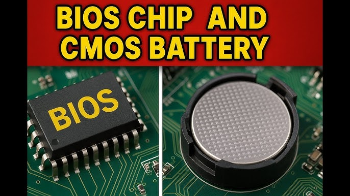
Part 4: Micro-Components & Processing Elements
1. The Processor (CPU) Architecture
- ALU (Arithmetic Logic Unit): Performs all mathematical calculations and logical decisions.
- CU (Control Unit): Directs the operation of the processor, fetching instructions from memory and routing data.
- Cache (L1, L2, L3): Super-fast memory built directly onto the CPU die to store frequently used data.

2. CPU Registers
Registers are the absolute smallest, fastest, and most crucial type of memory, located inside the CPU core.
- They hold the exact immediate data the ALU is currently calculating (often just 32 or 64 bits at a time). Examples include the Accumulator and the Program Counter.
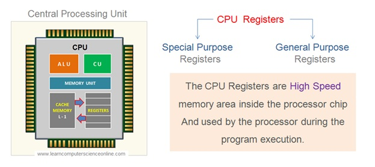
3. System Buses
A "Bus" is a communication system or physical pathway (microscopic wires) that transfers data between components.
- Data Bus: Carries the actual data being processed.
- Address Bus: Carries information about where the data needs to go in the memory.
- Control Bus: Carries command signals from the CPU to other devices (e.g., "Read" or Write").
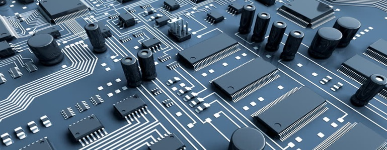
4. VRM, Inductors (Chokes), and Capacitors
These components work together around the CPU socket to deliver clean, exact power.
- VRM (Voltage Regulator Module): Takes the 12 Volts from the PSU and carefully steps it down to the ~1.2 Volts the CPU needs.
- Inductors (Chokes): The little square blocks near the CPU. They store energy in a magnetic field to smooth out sudden changes in electrical current.
- Capacitors: Tiny cylinders that store and release electrical energy to "clean" and filter the voltage, absorbing power spikes.
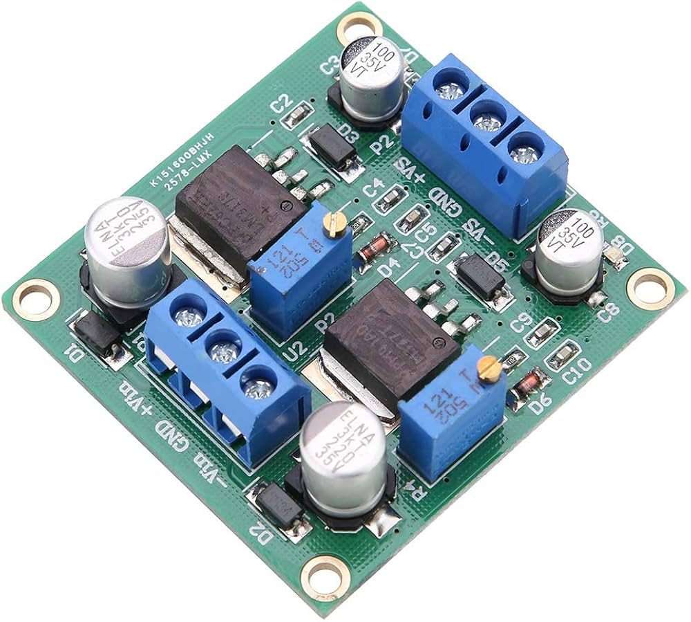
5. Transistors & Resistors
- Transistors: Microscopic semiconductor switches. A modern CPU contains billions of them. By turning on and off (representing 1s and 0s), they perform the logic operations of computing.
- Resistors: Small components that limit or regulate the flow of electrical current to protect delicate circuits.
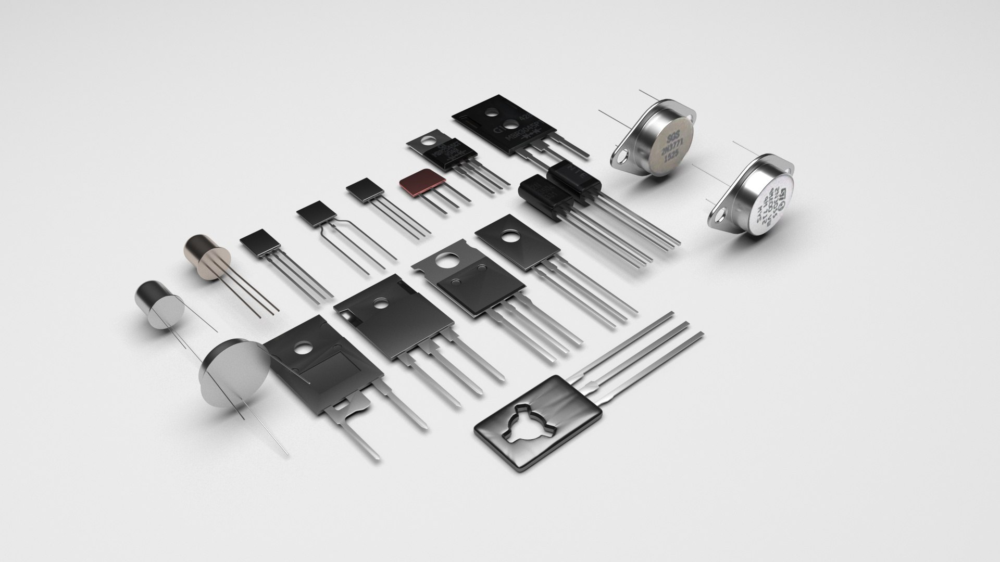